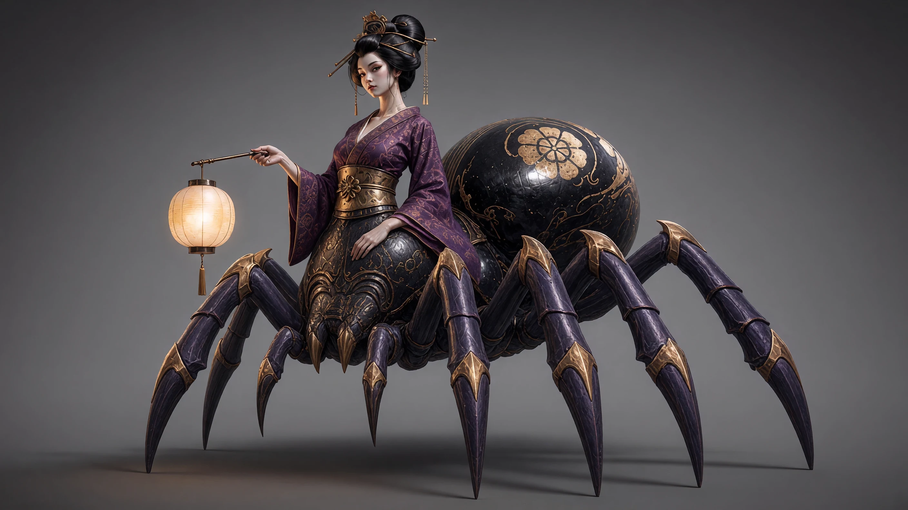
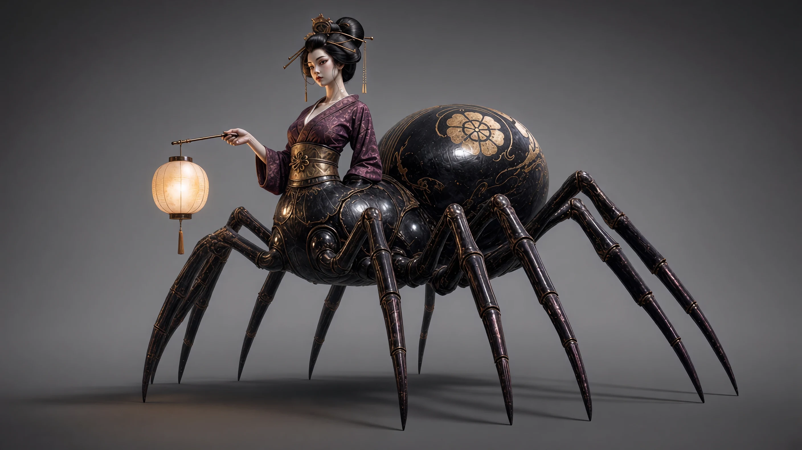
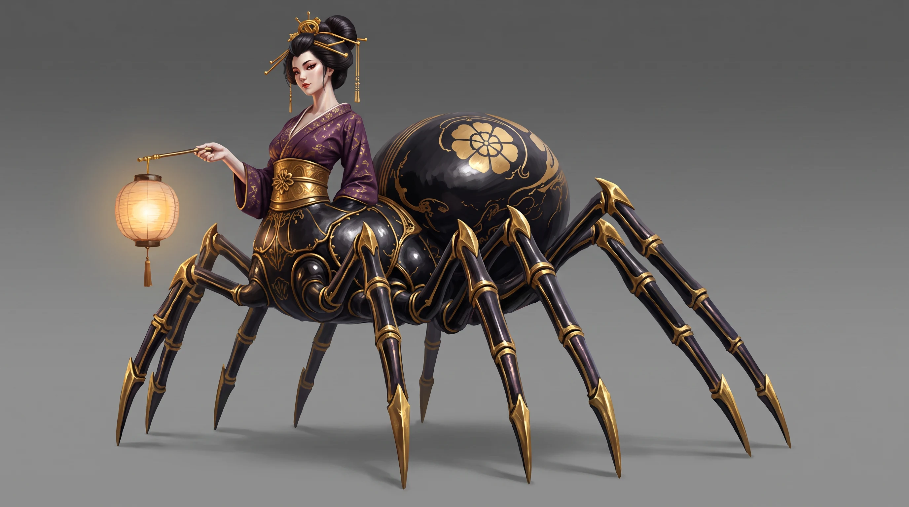
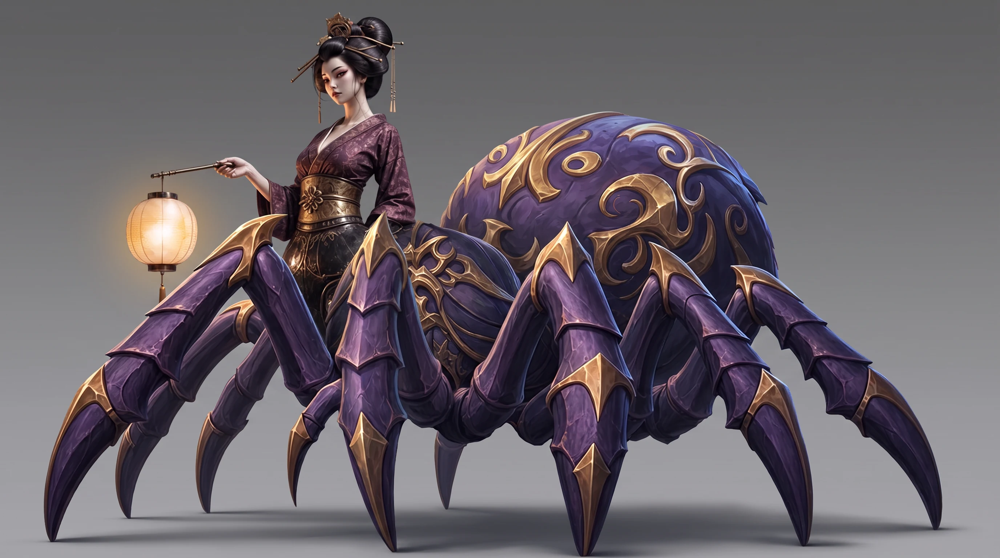
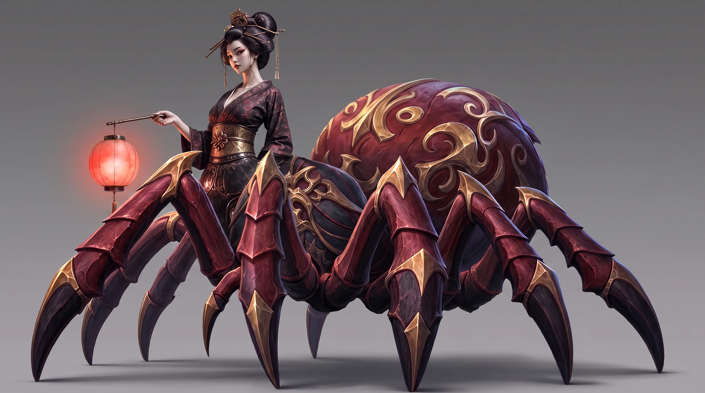
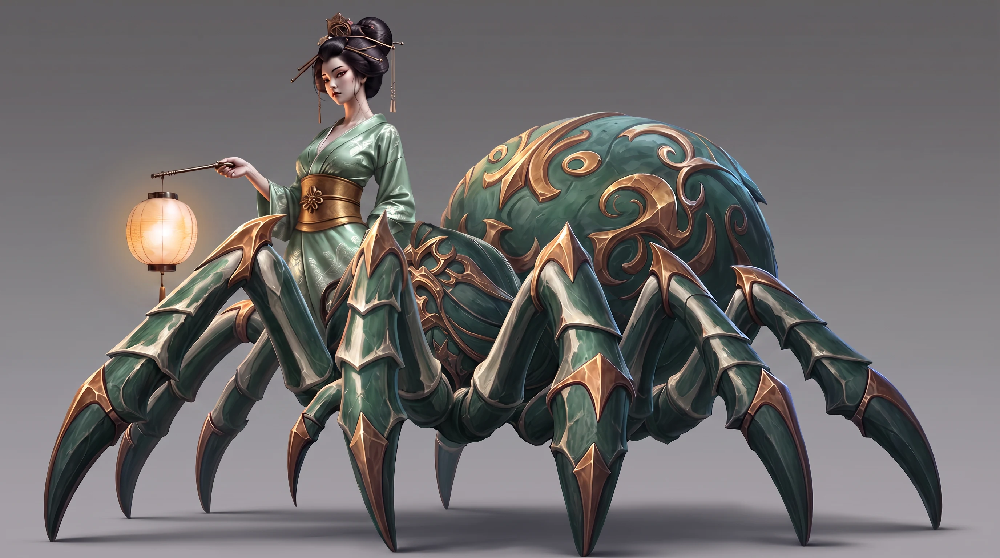
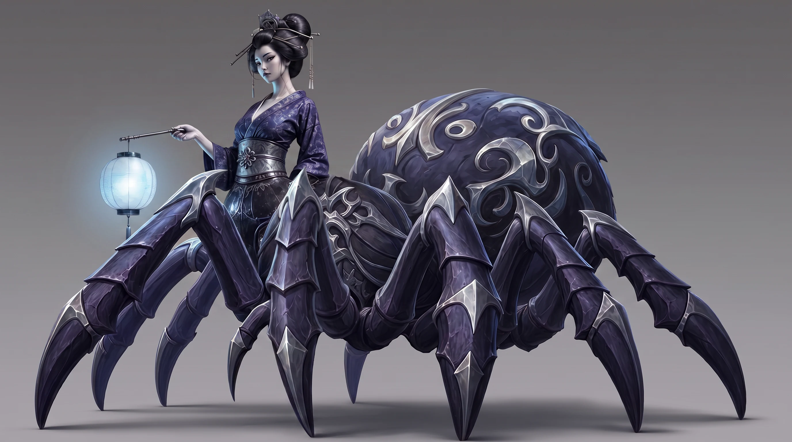
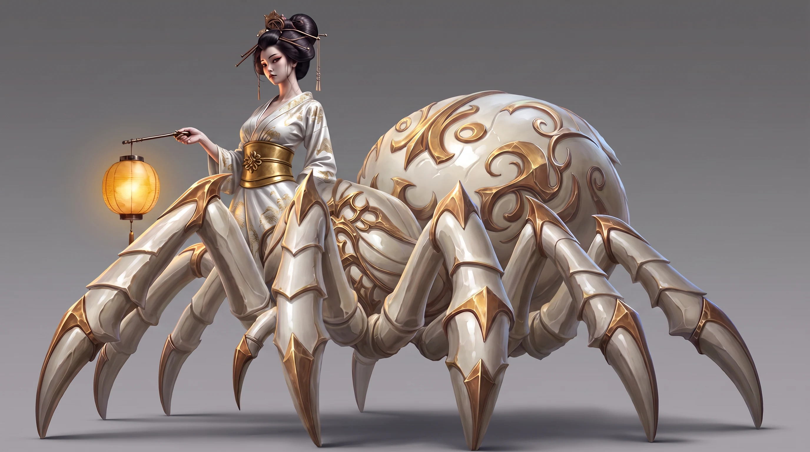

Mr. Mak Workspace / example
Arachne · Version 7 / The mixed direction
Blend stylized fantasy and Japanese design references. This mixed direction was explored, then superseded by a more coherent redesign.
A production example with historical model labels. Click any image to inspect and download it. Later rounds supersede earlier studies.
Working references
Earlier design reference

Earlier design reference

Grok Imagine 2 edit
Recipe A — halfway blend

Prompts
Saved generation prompt
Merge the two spider-queen characters from these two reference images into ONE new character that sits exactly halfway between them. Take from the first image (hand-painted stylized boss): the bold exaggerated proportions, the powerful armored legs with gold-trimmed plates, the painterly hand-painted texture, the confident regal presence of the woman. Take from the second image (Japanese elegance): the black urushi-lacquer finish of the spider body with the large golden crest emblem on the abdomen, the fitted kimono-style top ending in a gold obi belt exactly at the waist junction, the elegant hairstyle with golden kanzashi pins, the small paper lantern held on a short rod. The result is one majestic spider queen: hand-painted stylized finish over lacquered black-and-gold materials, ALL EIGHT legs fully visible and clearly separated, nothing hanging over the legs, no fabric touching the ground, full body, three-quarter view, plain mid-gray gradient backdrop, no text, no watermark.
Recipe B — japan woman + wow body

Prompts
Saved generation prompt
Merge the two spider-queen characters from these two reference images into ONE new character. The WOMAN comes from the second image (Japanese elegance): her calm pale face, the elegant hairstyle with golden kanzashi pins, the fitted kimono top with the gold obi belt at the waist junction, the paper lantern in her hand. The SPIDER BODY comes from the first image (hand-painted stylized boss): the huge stylized abdomen with painted gold ornament, the thick powerful armored legs with gold-trimmed plates and bold silhouettes, the painterly hand-painted texture. Blend the two rendering styles into one consistent finish. ALL EIGHT legs fully visible and clearly separated, nothing hanging over the legs, no fabric touching the ground, full body, three-quarter view, plain mid-gray gradient backdrop, no text, no watermark.
Nano Banana Pro edit
Recipe A — halfway blend

Prompts
Saved generation prompt
Merge the two spider-queen characters from these two reference images into ONE new character that sits exactly halfway between them. Take from the first image (hand-painted stylized boss): the bold exaggerated proportions, the powerful armored legs with gold-trimmed plates, the painterly hand-painted texture, the confident regal presence of the woman. Take from the second image (Japanese elegance): the black urushi-lacquer finish of the spider body with the large golden crest emblem on the abdomen, the fitted kimono-style top ending in a gold obi belt exactly at the waist junction, the elegant hairstyle with golden kanzashi pins, the small paper lantern held on a short rod. The result is one majestic spider queen: hand-painted stylized finish over lacquered black-and-gold materials, ALL EIGHT legs fully visible and clearly separated, nothing hanging over the legs, no fabric touching the ground, full body, three-quarter view, plain mid-gray gradient backdrop, no text, no watermark.
Recipe B — japan woman + wow body

Prompts
Saved generation prompt
Merge the two spider-queen characters from these two reference images into ONE new character. The WOMAN comes from the second image (Japanese elegance): her calm pale face, the elegant hairstyle with golden kanzashi pins, the fitted kimono top with the gold obi belt at the waist junction, the paper lantern in her hand. The SPIDER BODY comes from the first image (hand-painted stylized boss): the huge stylized abdomen with painted gold ornament, the thick powerful armored legs with gold-trimmed plates and bold silhouettes, the painterly hand-painted texture. Blend the two rendering styles into one consistent finish. ALL EIGHT legs fully visible and clearly separated, nothing hanging over the legs, no fabric touching the ground, full body, three-quarter view, plain mid-gray gradient backdrop, no text, no watermark.
GPT-Image-2 edit
Recipe A — halfway blend
not generated
Recipe B — japan woman + wow body
not generated
A — Crimson-black lacquer with gold

Prompts
Saved generation prompt
Recolor this character, keeping the exact same design, pose, proportions, materials, lantern and lighting — change ONLY the color scheme. New palette: deep crimson-red armored spider body plates with black lacquer shadows, the gold trim and gold swirl ornaments kept, the kimono in black silk with crimson pattern, the obi in aged gold, warm red glow in the lantern. 60% crimson-black, 30% black silk and pale skin, 10% gold. No text, no watermark.
B — Jade green with ivory and gold

Prompts
Saved generation prompt
Recolor this character, keeping the exact same design, pose, proportions, materials, lantern and lighting — change ONLY the color scheme. New palette: jade-green armored spider body plates with ivory-bone highlights, the trim and swirl ornaments in warm gold, the kimono in celadon-green silk with ivory pattern, the obi in gold, soft warm lantern glow. 60% jade green, 30% ivory and pale skin, 10% gold. No text, no watermark.
C — Midnight indigo with cold SILVER trim and a moonlight lantern.

Prompts
Saved generation prompt
Recolor this character, keeping the exact same design, pose, proportions, materials, lantern and lighting — change ONLY the color scheme. New palette: midnight indigo-black armored spider body plates, all the trim and swirl ornaments in cold moonlight SILVER instead of gold, the kimono in deep indigo silk with silver pattern, the obi in silver, and the lantern glowing cold pale blue like moonlight. 60% midnight indigo, 30% black and pale skin, 10% silver-blue. No text, no watermark.
D — Bone-ivory porcelain with gold and warm amber

Prompts
Saved generation prompt
Recolor this character, keeping the exact same design, pose, proportions, materials, lantern and lighting — change ONLY the color scheme. New palette: bone-ivory white armored spider body plates like polished porcelain, the trim and swirl ornaments in warm gold, the kimono in white silk with subtle gold pattern, the obi in gold, warm amber lantern glow. 60% ivory white, 30% warm white silk and pale skin, 10% gold and amber. No text, no watermark.
A: Crimson-black lacquer with gold — the oni-red take.
B: Jade green with ivory and gold — the celadon take.
C: Midnight indigo with cold SILVER trim and a moonlight lantern.
D: Bone-ivory porcelain with gold and warm amber — the white queen.